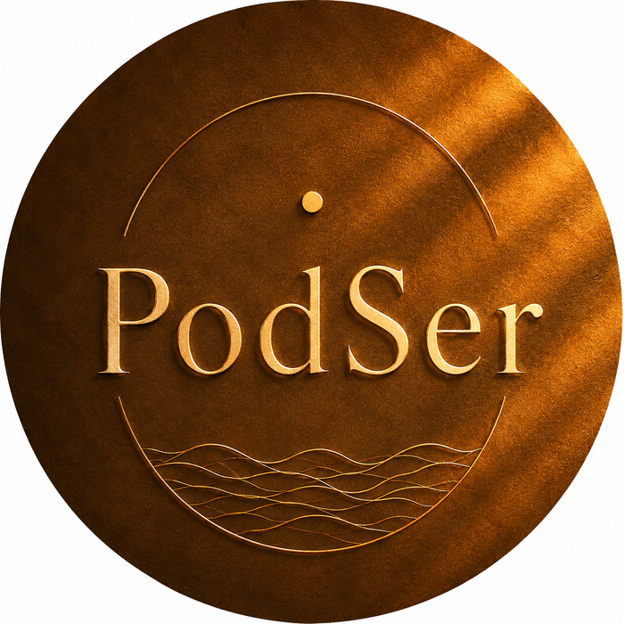

Entre Saber e Ser
Grandes perguntas. Diferentes perspectivas.
Um caminho de volta ao Ser.
Entre Saber e Ser • Filosofia • Espiritualidade • Psicologia • Ciência

Grandes perguntas. Diferentes perspectivas.
Um caminho de volta ao Ser.
Entre Saber e Ser • Filosofia • Espiritualidade • Psicologia • Ciência